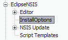
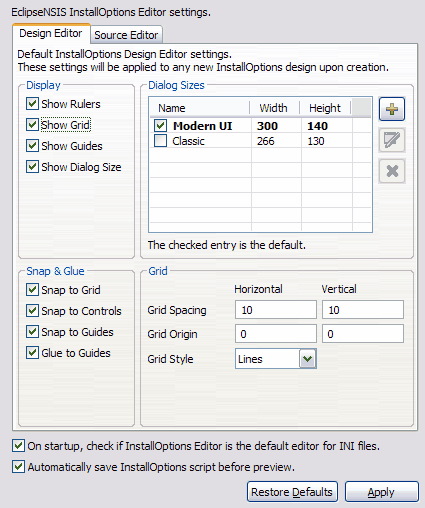
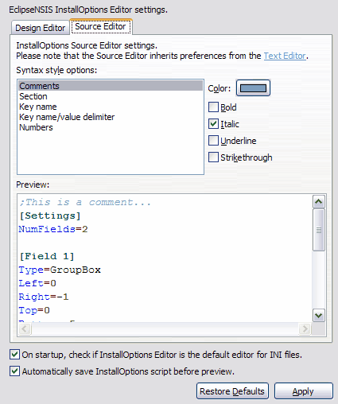

Preferences
The EclipseNSIS InstallOptions Preference pages can be accessed by opening the Window→Preferences→ menu item and navigating to the EclipseNSIS→InstallOptions item in the Preferences dialog.

Preferences may be set for the Design Editor and the Source Editor.
Design Editor
These preferences are used to customize the settings of the
design editor.
These settings are applied the first time an InstallOptions script is
opened using the design editor.

- Display
- These settings are can be used to control whether design
editor drawing tools are shown or hidden by default.
The drawing tools currently supported for show/hide are:
← Back
- Dialog Sizes
- This is used to customize the InstallOptions dialog sizes. By default, the EclipseNSIS InstallOptions Editor comes configured with the sizes of the dialogs for standard and MUI installers. The checked entry is the default and will be applied to an InstallOptions script the first time it is opened using the design editor. ← Back
- Snap & Glue
- These settings configure the types of snap and glue operations which are enabled by default. ← Back
Source Editor
These preferences are used to customize the look and feel of
the
source editor.
Please note that the source editor inherits preferences
from the Text
Editor.

- Syntax style options
- Syntax styles specify how InstallOptions source code is rendered. The available syntax elements are listed below. ← Back
- Comments
- Comments.
- Section
- INI section headers, e.g., [Settings], [Field 1], etc..
- Key name
- INI key names, e.g., ListItems, VerifyText, etc.
- Key name/value delimiter
- The separator between INI key names and key values. Current only the equals sign ("=") is supported.
- Numbers
- Numbers in decimal, octal and hex format.
- Preview
- Displays the preview of InstallOptions source code respecting the current colors and styles. ← Back
Previous | Contents | Next
Copyright © 2004, 2005 Sunil Kamath (IcemanK).